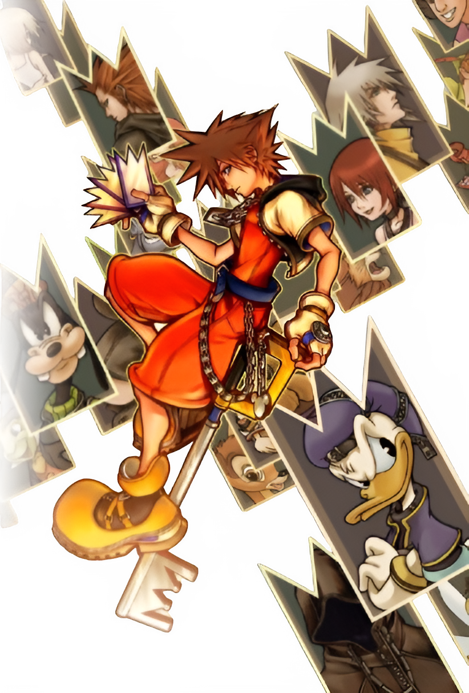
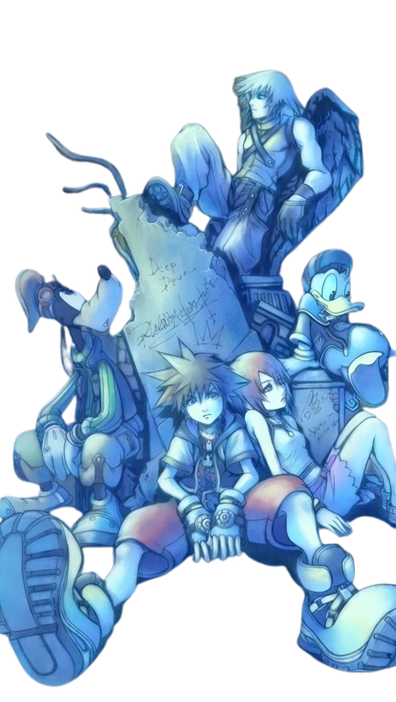
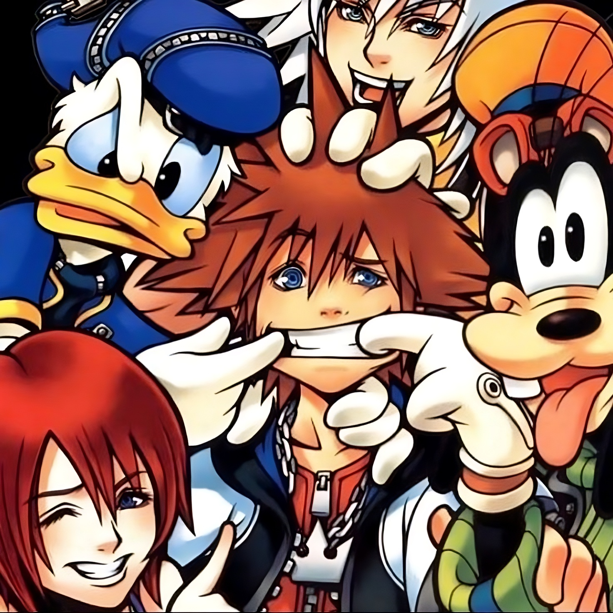

Kingdom Hearts III Opening Movie
Broadening Horizons
This trailer revealed the very game which many diehard fans had considered to be a myth at this point in time. There hadn't been another mainline release in the Kingdom Hearts series since 2005's Kingdom Hearts II. Although, that's not to say they hadn't released other games in the series since Kingdom Hearts II such as Kingdom Hearts: Re:Chain of Memories and Kingdom Hearts 358/2 Days. That being said, these games weren't enough to fill the void that was left upon completing the unanimously praised Kingdom Hearts II that left fans yearning for a sneak peek into the future direction of the series. At long last, their wishes were met with a spectacle that would go on to make Kingdom Hearts III the fastest selling game in the entire franchise. Effectively lowering the barrier of entry to a series that had cultivated a diehard fanbase unlike any other JRPG series.


Kingdom Hearts Synopsis
Hero of Light
Kingdom Hearts is a story about a boy named Sora who grew up in a far-off place called Destiny Islands. Alongside him were his two best friends Kairi and Riku with whom he often spoke about exploring worlds unbeknowst to them. Riku and Kairi shared this innocent dream with Sora and together they attempted to build a raft as a means of exploration. However, everything changed when a swarm of Heartless, beings born from the darkness in people's hearts, attacked the islands at the whims of an unknown evil force. It was then that Sora was prophetically chosen to weild the mystical keyblade, a weapon capable of defeating the Heartless by releasing hearts caught within darkness's grasp. After these sudden events Sora wakes up in a place known as Traverse Town where he meets Donald Duck and Goofy who are on a mission assigned to them by King Mickey to find the wielder of the keyblade. From there the trio undertake a multi-world encompassing adventure to find Sora's friends and stop the unrelenting Heartless.
Dark Curiosity
Before his unknown arrival to Traverse Town, Sora had a heart-wrenching confrontation with the very source of this sudden attack. Riku, Sora's best friend, had willingly accepted the darkness as a means of escape from the confines of Destiny Islands. Although he had always been protective of his friends and was prideful of his own abilities, Riku's insatiable curiosity for the outside world led him to seek out dark means and forsake the very friends he holds dear. This decision pits him against Sora as when Sora was granted the keyblade it was met by Riku with jealousy and resentment as his pride would not allow for him to be left behind by Sora. This congitive dissonance leads Riku down a dark path that corrodes his morals as well as his relationship with Sora and Kairi. Sora and Riku are now fated to battle as one of them makes a full descent in darkness' embrace while the other chases after armed with nothing but his guiding light and the strength of the connections he has forged.
My Experience With Kingdom Hearts

Kingdom Hearts was originally a series I had been introduced to indirectly through the "Death Battle!" series on Youtube. Specifically the video where Sora fought Link from The Legend of Zelda and I was immediately intrigued by not only Sora's character design, but also by the fact that he was accompanied by Donald and Goofy which were both huge childhood icons of mine because I used to watch Disney cartoons when I was younger. A couple years after this I was randomly scrolling through the Playstation Store and I saw that the Kingdom Hearts all in one package was on sale for $30 and mind you this was only a year after Kingdom Hearts III came out so I knew this wasn't a deal I could pass up especially considering the previous intrigue I had with the series. I was 14 at the time and this was during the covid-19 pandemic so I really had nothing to do other than just sit at home and waste my days so I figured why not expand my gaming horizons than just the typical Fortnite and Call of Duty games. This would turn out to be, and I'm not exaggerating when I say this, one of the best decisions I've ever made in my adolescent life as this game would go on to serve as a gateway to a whole new world of RPG gaming that would persistenly immerse me in world after world and leave me with a sense of wonder that has yet to diminish even after all the games I would go on to play after the fact. Kingdom Hearts truly shaped me in ways that I could never do justice in attempting to verbalize. All I can say and give is thanks to my younger, curious self in taking a chance on a game that would have its personal impact felt even to this very day. This game gave me characters and worlds to connect to in a time period where we were all but devoid of physical connection. It brought me solace in what was otherwise deemed total isolation. Thank you Kingdom Hearts.